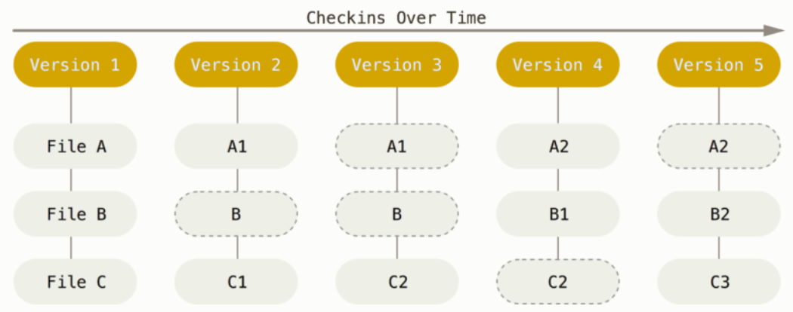

Getting started with Git
Week 3 - Part I
1 Overview
Overview of this week
- This page: Getting started with Git
- Thursday: Remotes on GitHub, and branching & merging
- Extra material (e.g. undoing changes and viewing the past)
Overview of this session
- An introduction to version control
- The basic Git workflow
- Showing changes and referring to the past
- Useful Git tidbits
2 An introduction to version control
2.1 Why use a Version Control System (VCS)?
Here are some “versioning”-related challenges for your research project files that you may have without a formal Version Control System (VCS):
What to save periodic copies of?
- Do you only save versions of individual files?
Space-efficient, but not possible to go back to the state of other project files at the same point in time. - Do you save a copy of the full project periodically?
Better, but can become prohibitive in terms of disk storage.
- Do you only save versions of individual files?
How to manage simultaneous variants of files, such as when making experimental changes?
How to know what changes were made between saved versions? Try to summarize this in the file name?
How to collaborate, especially when working simultaneously?
A formal VCS can help you with these challenges. With a VCS:
You can easily see your history of changes.
You have a time machine: you can go back to past states of your project (and not just of individual files!)
You can do simultaneous collaborative work — you can always track down who made which changes.
You can make experimental changes without affecting current functionality.
Sharing your code and other aspects of your project is easy.
Or, as the CSB book put it:
Version control is a way to keep your scientific projects tidily organized, collaborate on science, and have the whole history of each project at your fingertips.
— CSB Chapter 2
2.2 How Git roughly works
Git is the most widely used Version Control System1. With Git, you save snapshots of your entire project with every minor piece of progress. Git manages this cleverly without having to create full copies of the project for every snapshot:

In fact, it doesn’t even save full copies of changed files: it tracks changes on a line-by-line bases, and saves changed lines!
Note that one Git database manages files inside a single directory structure, so it is important that your project(s) are properly organized or at least kept in separate dirs, as discussed last week.
Key Git term 1: Repository
A “repository” (or “repo”) is the version-control database for a project:
- It is saved in a hidden folder
.gitin the root dir of your project. - You can start a repository in any dir on your computer.
- Typically, you should have one Git repository for one research project.
- You can also download any public online Git repository. In fact, we already did this in week 1, when we used
git cloneto download the CSB book’s repository.
Key Git term 2: Commit
A “commit” is a saved snapshot of the project:
- It is always possible to go the exact state of the entire project or individual files for any commit.
- Whenever you commit, you also include a message describing the changes.
2.3 What do I put under version control?
The primary files to put under version control are:
- Scripts3
- Project documentation
- Manuscripts, if you write them in plain text
What about data and results?
- Raw data may or may not be committed (see Limitations below) — with omics data, generally not due to large file sizes
- Metadata TODO
- Results should not be committed
Source versus derived files
The general idea is that you should version-control the source, not derived files. For instance:
- Version-control your Markdown file, not the HTML it produces.
- Version-control your script, not the results it produces.
Recall last week’s point that results and other derived files are (or should be) dispensable, because they can be regenerated using the raw data and the scripts.
File limitations
There are some limitations to the types and sizes of files that can be committed:
- File type: Binary (non-text) files can be included but can’t be tracked in quite the same way as plain-text files4
- File size: GitHub will not allow files over 100 MB.
- Repository size: Best to keep individual repo’s under 1 GB.
As such, omics data is usually too large to be version-controlled. You should use dedicated repositories for this like the NCBI’s Sequence Read Archive (SRA).
2.4 Using Git

You can use Git in several different ways:
- Native command-line interface (CLI).
- Third-party GUIs — e.g., Git Kraken works for all operating systems.
- Using IDEs/editors with Git integration like RStudio and VS Code.
In this course, we will mainly focus on the CLI because it’s the most universal and powerful interface. But it’s absolutely fine to (partially) switch to GUI usage later.
Git takes some getting used to, regardless of the interface. Many people have one or more “false starts” with it. I hope that being forced to use it in a course will take you past that!
3 The basic Git workflow
Only three commands tend to make up the vast majority of your Git work:
git add
“Stage” files, i.e. mark files as ready to be committed.git commit
Commit all currently staged changes: create a new snapshot of the project.git status
Get the status of your repo: which files have changed, which new files are present, tips on next steps, etc.

As you saw above, Git commands are always git followed by a second word or command/subcommand or “verb”: git add, git commit, etc. As such, the general Git command syntax is:
git <(sub)command> [options] [args]Files in your directory structure are not automatically tracked — you need to add them using git add:
# Start tracking *and* stage a file:
git add file.txt
# Stage all previously untracked and tracked-&-changed files in the project:
git add --all
4 Your first repository
Here, we will create a repository for a mock book project: the writing of “On the Origin of Species”.
- Launch VS Code at https://ondemand.osc.edu as before, and open a terminal in VS Code.
- Load the OSC Git module5: run
module load git/2.39.0.
4.1 Start a Git repository
Create a dir for a mock project to version-control:
# You should be in /fs/PAS2700/users/$USER, cd there if necessary
mkdir -p week03/originspecies
cd week03/originspeciesInitialize a new Git repository with git init:
git initInitialized empty Git repository in /fs/ess/PAS2700/users/jelmer/week03/originspecies/.git/Check the status of the repo with git status:
git statusOn branch main
No commits yet
nothing to commit (create/copy files and use "git add" to track)4.2 Your first commit
Start writing the book:
touch origin.txt
echo "An Abstract of an Essay on ..." > origin.txtNow, let’s check the status of the repository again:
git statusUntracked files:
(use "git add <file>..." to include in what will be committed)
origin.txtWhat’s happening here is that Git has detected the new file, but as mentioned above, it does not automatically start tracking files. It tells us the file is “Untracked” and also gives us a hint on how we can add it to the repository.
So, we start tracking the file and stage it all at once with git add:
# (Note that tab-completion on file names will work here, too)
git add origin.txtCheck the status of the repo again:
git statusChanges to be committed:
(use "git rm --cached <file>..." to unstage)
new file: origin.txtNow, our new file is listed as a “change to be committed” (we also get a hint on how we can “unstage” the file: i.e., reverting what we just did with git add and leaving the file untracked once again).
With our file tracked & staged, let’s make our first commit — note that we have to use the option -m followed by a string which is the “commit message”: this is supposed to be a short description of the changes we are including in the current commit.
git commit -m "Started the book"[main (root-commit) 3df4361] Started the book
1 file changed, 1 insertion(+)
create mode 100644 origin.txtNow that we’ve made a commit, let’s check the status of the repo again:
git statusOn branch main
nothing to commit, working tree cleangit status a lot — as a sanity check before and after other git actions.
We will also look at the commit history of the repo with git log:
git logcommit 3df4361c1de9b71e08bf6e050105d53097acec21 (HEAD -> main)
Author: Jelmer Poelstra <jelmerpoelstra@gmail.com>
Date: Sun Mar 10 10:55:35 2024 -0400
Started the bookNote the hexadecimal code (using numbers + the letters a-f) on the first line — this is a unique identifiers for each commit, called the SHA-1 checksum. You can reference and access each past commit with these checksums.
4.3 Your second commit
We will start by modifying the book file — we’ll actually overwrite the earlier content:
echo "On the Origin of Species" > origin.txtCheck the status of the repo:
git statusChanges not staged for commit:
(use "git add <file>..." to update what will be committed)
(use "git restore <file>..." to discard changes in working directory)
modified: origin.txt
no changes added to commit (use "git add" and/or "git commit -a")We see that Git has noticed the changes, because the file is being tracked, but before we can commit it again, we need to use git add to stage the file:
git add origin.txtNow, we’re ready to commit:
git commit -m "Changed the title as suggested by Murray"[main f106353] Changed the title as suggested by Murray
1 file changed, 1 insertion(+), 1 deletion(-)Git is giving us a brief summary of the changes that were made: we changed 1 file (origin.txt), and since we replaced the first and only line of text in that file, it is interpreting that as 1 insertion (the new line) and 1 deletion (the removed/replace line).
Let’s check the history of the repo again — we’ll see that there are now 2 commits:
git logcommit f1063537b6a1e0d87d2d52c9e96c38694959997a (HEAD -> main)
Author: Jelmer Poelstra <jelmerpoelstra@gmail.com>
Date: Sun Mar 10 11:01:49 2024 -0400
Changed the title as suggested by Murray
commit 3df4361c1de9b71e08bf6e050105d53097acec21
Author: Jelmer Poelstra <jelmerpoelstra@gmail.com>
Date: Sun Mar 10 10:55:35 2024 -0400
Started the bookYou can stage individual files, all files, or wildcard selections:
# NOTE: Don't run any of this - these are hypothetical examples
# Stage a single file
git add myfile.txt
# Stage all files in the project:
git add --all
git add .
git add *
# Stage all files in a specific dir in the project:
git add scripts/*
# Stage all shell scripts *anywhere* in project:
git add *sh You can also use the -a option for git commit as a shortcut to stage and commit all changes with a single command (but note that this will not add untracked files):
# Stage & commit all _tracked_ files
git commit -am "My commit message"4.4 What to include in individual commits
In the last example in the box above, you saw the -a option to git commit, which allows you to all at once stage & commit all changes that you made after the last commit.
That seems much more convenient than separately adding individual files. But thinking about the purposes of version control broadly, what could be a disadvantage of committing all changes simultaneously?
It’s good practice to not simply and only commit, say, at the end of each day, but to try and create commits for units of progress worth saving and as such create separate commits for distinct changes.
For example, let’s say that use git status to check which files you’ve changed since your last commit, and you find that you have:
- Updated a README file to include more information about your samples.
- Worked on a script to run quality control of sequence files.
These are completely unrelated change, and would not be recommended to include in a single commit.
Exercise (CSB Intermezzo 2.1)
- Create a new file
todo.txtcontaining the line:June 18, 1858: read essay from Wallace.
Click to see the solution
echo "June 18, 1858: read essay from Wallace" > todo.txt- Use a Git command to stage the file.
Click to see the solution
git add todo.txt- Create a Git commit with the commit message “Added to-do list”.
Click to see the solution
git commit -m "Added to-do list"5 Showing changes and referring to the past
5.1 File states and the three “trees”
Tracked files can be in one of three states:
- Unchanged since the last commit (committed)
- Modified and staged since the last commit (staged)
- Modified but not staged since the last commit (modified)
These three states correspond to the three “trees” of Git:
- HEAD: State of the project in most recent commit (on current branch).
- Index (Stage): State of the project ready to be committed.
- Working directory: State of the project as currently on your computer.

Or consider this table TODO DESCRIBE:
| File state | HEAD (Last commit) | Index (Stage) | Working Dir |
|---|---|---|---|
| Committed | version X | version X | version X |
| Staged | version X | version Y | version Y |
| Modified | version X | version X | version Y |
| Untracked | - | - | version X |
5.2 Ways to refer to past commits
To refer to specific past commits, you can:
- Using the SHA-1 ID (full ID or 7-character abbreviation)
- Using HEAD for the most recent commit, and two ways of indicating ancestors of HEAD:
| X-to-last commit | Caret notation |
|---|---|
| 2nd-to-last | HEAD^ |
| 3rd-to-last | HEAD^^ |
| 4rd-to-last | HEAD^^^ |
| and so on… |

5.3 Showing changes
By default, git diff will show all changes between the working dir and:
- If something has been staged: the Index (stage).
- If nothing has been staged: the last commit.
Right now, there are no differences to report in our originspecies repo: our working dir, the stage/index, and the last commit are all the same:
git diffWe make a change to the to-do list (note: you should have done the exercise above for this to work!), and check again:
echo "June 20, 1858: Send first draft to Huxley" >> todo.txt
git diffdiff --git a/todo.txt b/todo.txt
index e3b5e55..9aca508 100644
--- a/todo.txt
+++ b/todo.txt
@@ -1 +1,2 @@
June 18, 1858: read essay from Wallace
+June 20, 1858: Send first draft to HuxleyIf there are a lot of differences to show, git diff will open the less file pager, and you no longer have a prompt.
In that case, press q to exit less.
If you have changed multiple files, but just want to see differences for one of them, you can specify the filename — in our case here, that will give the same output as the plain git diff command above, since we only changed one file:
git diff todo.txt
# Output not shown, same as above- Click on the Git symbol in the narrow side bar to open the Source Control side bar.
- In the source control sidebar, click on the
Mnext to the filetodo.txt.
git diff (Click to expand)
To show changes between the Index (stage) and the last commit, use the
--stagedoption togit diff.You can also compare your repo or individual files between any two arbitrary commits:
# Last commit vs second-to-last commit - full repo: git diff HEAD HEAD^ # Last commit vs a specified commit - specific file: git diff HEAD d715c54 todo.txt
Exercise: commit the changes to todo.txt
TODO
6 Ignoring files and directories
As discussed above, it’s best not to track some files, such as very bulky data files, temporary files, and results.
We’ve seen that Git will notice and report any “untracked” files in your project. This can get annoying and chaotic if you have a ton of files that you do not want to track, and you might also accidentally add them such as with git add --all.
To deal with this, you can tell Git not to pay attention to certain files by adding file names and wildcard selections to a .gitignore file. This way, these files won’t be listed as untracked files.
For example, let’s add a dir data, and a file ending in a ~ (a temporary file type that e.g. text editors can produce):
mkdir data
touch data/drawings_1855-\{01..12\} todo.txt~Check the status of the repo:
git statusUntracked files:
(use "git add <file>..." to include in what will be committed)
data/
todo.txt~Now, we create a .gitignore file that instructs Git to ignore everything in the data dir, and any file that ends in a ~:
echo "data/" > .gitignore
echo "*~" >> .gitignoreCheck the status again, and the files we want to ignore should no longer be listed as untracked files:
git statusUntracked files:
(use "git add <file>..." to include in what will be committed)
.gitignoreHowever, we do now have an untracked .gitignore file, and we should track and commit this file:
git add .gitignore
git commit -m "Added a gitignore file"[main 9715ab5] Added a gitignore file
1 file changed, 2 insertions(+)
create mode 100644 .gitignoreGood project file organization, as discussed last week, can make your life with Git a lot easier, including with files to ignore. For example, if you keep all your results in a results folder…
Conversely, if you were mixing scripts with data …
7 Moving and removing tracked files
When wanting remove, move, or rename files that are tracked by Git, it is best to preface regular rm and mv commands with git:
git rm file-to-rm.txt
git mv myoldname.txt mynewname.csvYou will inevitably forget about this, and Git will eventually figure out what happened. For example: for a renamed file, Git will first see a removed file and an added file; after you stage the “new” file, Git realizes it was renamed.
However, it is cleaner to use git mv and git rm, so do so when you remember.
Footnotes
Others include SVN and Mercurial.↩︎
GitHub is the most widely used but not the only such website – others include GitLab, Bitbucket, and SourceForge.↩︎
and source code for software if you’re building that.↩︎
Git will just save an entirely new version whenever there’s been a change rather than tracking changes in individual lines.↩︎
Note that Git is available at OSC even without loading this module, but that’s a much older version.↩︎